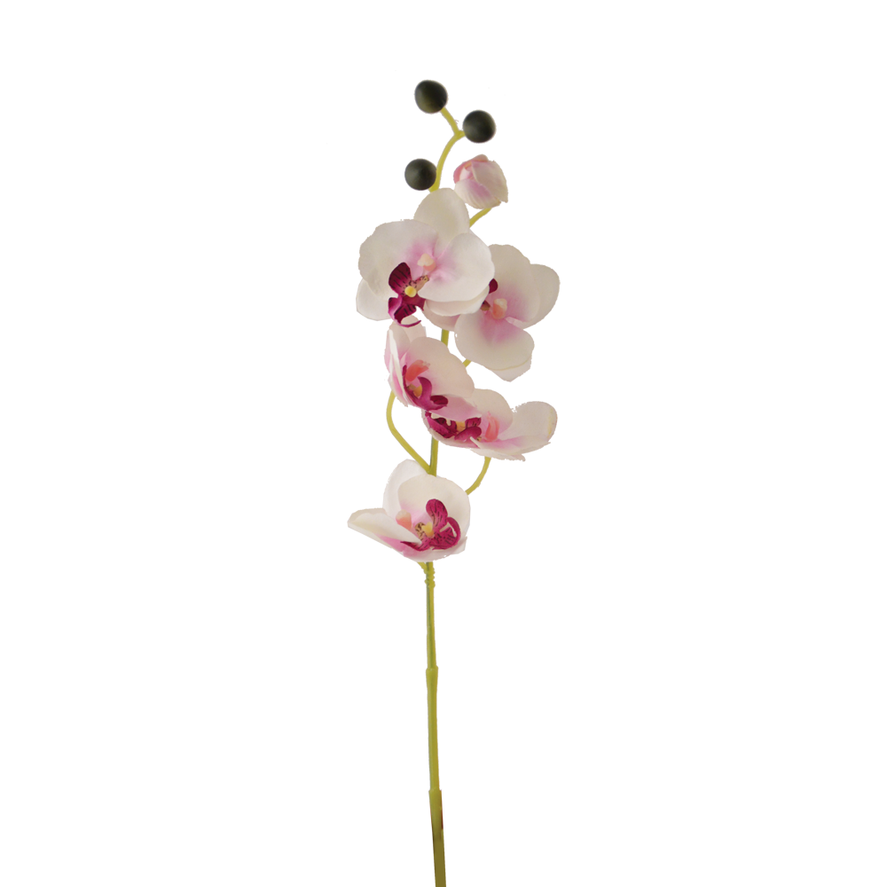
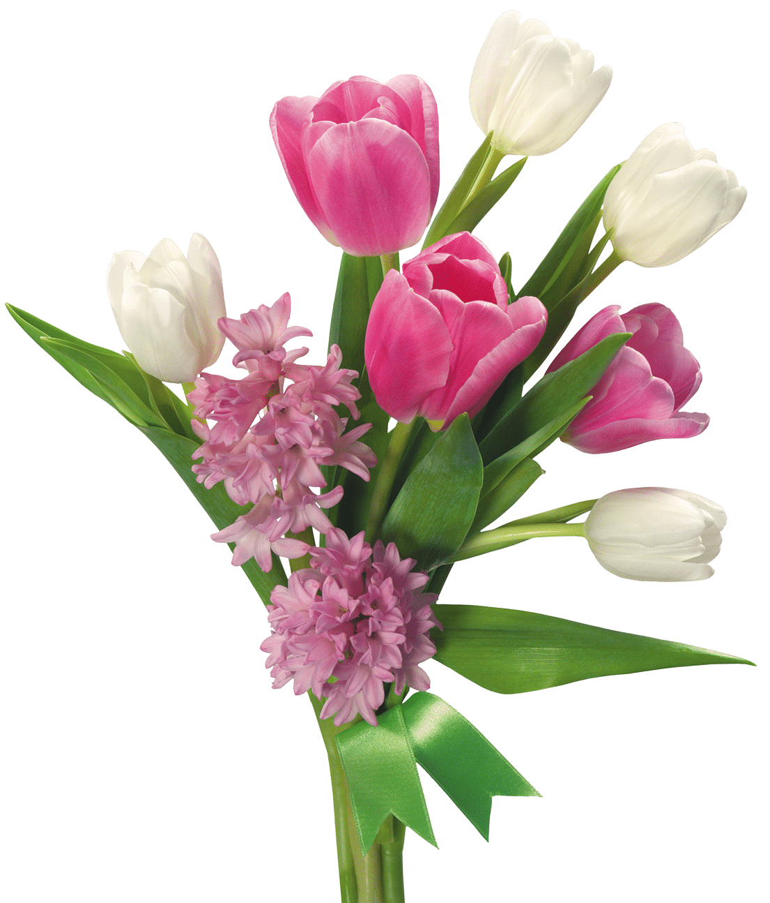

Producto y descripción

Producto Genial
Esta hermosa planta de una espiga viene finamente arreglada en una elegante maceta y con un buen cuidado puede durar hasta 8 semanas..
Producto Impresionantes
Exquisito estilo armónico! Que tu hogar se vea siempre genial con elementos como este set de plantas decorativas modelo Mini Leticias, un coqueto juego que luce bello. Es de tamaño pequeño, que cuentan con una base de cubierta de tela tipo tejido, ideal para una apariencia única. Además, hay varios tipos de plantas suculentas, luciendo tiernas y en tendencia.
